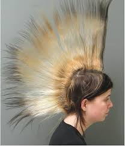
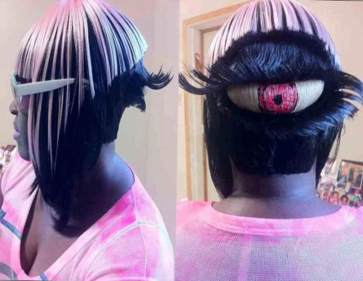
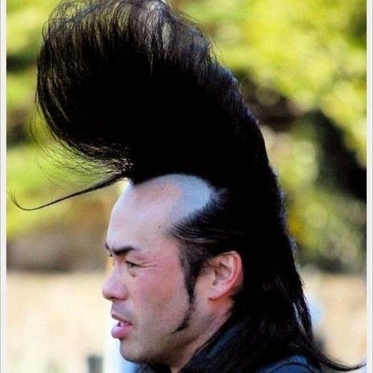

#1
#2
#3
#4
Вниз
Любимые прически
Первая:
Эта прическа не самая лучшая, но определенно хороша
Я бы хотел что-то подобное
:)
Вторая:

Здесь все хорошо
И прическа, и утюг, которым это было сделано
Третья:

Это стиль
Мой друг никита так же выглядит
:)
Четвертая:

Вариативность практического приминения этой прически поражает..
Мой друг никита так же хочет выглядить
:)